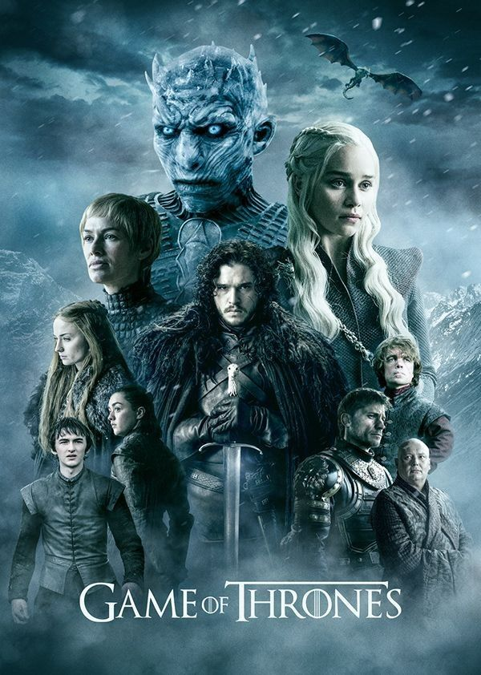

Game of Thrones
★★★★★ 200 votos
Nove famílias nobres lutam pelo controle da terra mítica de Westeros, enquanto um antigo inimigo retorna após estar adormecido por milhares de anos. Intrigas, traições e batalhas épicas definem esta série que conquistou o mundo.
Baixar Série CompletaTemporadas
Temporada 1
- Ep. 1 — O Inverno Está Chegando (Winter Is Coming)
- Ep. 2 — A Estrada Real (The Kingsroad)
- Ep. 3 — Lord Snow
- Ep. 4 — Aleijado, Bastardo e Coisas Que Quebram (Cripples, Bastards, and Broken Things)
- Ep. 5 — O Lobo e o Leão (The Wolf and the Lion)
- Ep. 6 — Um Coroa de Ouro (A Golden Crown)
- Ep. 7 — Ganhando Ou Morrendo (You Win or You Die)
- Ep. 8 — O Ponto Sem Retorno (The Pointy End)
- Ep. 9 — Baelor
- Ep. 10 — Fogo e Sangue (Fire and Blood)
Temporada 2
- Ep. 1 — O Norte Recorda (The North Remembers)
- Ep. 2 — As Terras da Noite (The Night Lands)
- Ep. 3 — O Que Está Morto Nunca Morrerá (What Is Dead May Never Die)
- Ep. 4 — Jardim dos Ossos (Garden of Bones)
- Ep. 5 — O Fantasma de Harrenhal (The Ghost of Harrenhal)
- Ep. 6 — Os Deuses Antigos e Novos (The Old Gods and the New)
- Ep. 7 — Um Homem Sem Honra (A Man Without Honor)
- Ep. 8 — O Príncipe de Winterfell (The Prince of Winterfell)
- Ep. 9 — A Água Negra (Blackwater)
- Ep. 10 — Valar Morghulis
Temporada 3
- Ep. 1 — Valar Dohaeris
- Ep. 2 — Asas Negras, Palavras Negras (Dark Wings, Dark Words)
- Ep. 3 — Caminho da Punição (Walk of Punishment)
- Ep. 4 — E Agora Sua Sentinela Está Encerrada (And Now His Watch Is Ended)
- Ep. 5 — Beijo de Fogo (Kissed by Fire)
- Ep. 6 — A Escalada (The Climb)
- Ep. 7 — O Urso e a Donzela (The Bear and the Maiden Fair)
- Ep. 8 — Segundos Filhos (Second Sons)
- Ep. 9 — As Chuvas de Castamere (The Rains of Castamere)
- Ep. 10 — Mhysa
Temporada 4
- Ep. 1 — Dois Espadas (Two Swords)
- Ep. 2 — O Leão e a Rosa (The Lion and the Rose)
- Ep. 3 — O Que Quebrou As Correntes (Breaker of Chains)
- Ep. 4 — Guardião do Juramento (Oathkeeper)
- Ep. 5 — O Primeiro de Seu Nome (First of His Name)
- Ep. 6 — As Leis dos Deuses e dos Homens (The Laws of Gods and Men)
- Ep. 7 — O Monte e a Víbora (Mockingbird)
- Ep. 8 — A Montanha e a Víbora (The Mountain and the Viper)
- Ep. 9 — Os Vigias na Muralha (The Watchers on the Wall)
- Ep. 10 — As Crianças (The Children)
Temporada 5
- Ep. 1 — As Guerras Por Vir (The Wars to Come)
- Ep. 2 — A Casa do Preto e Branco (The House of Black and White)
- Ep. 3 — O Alto Pardal (High Sparrow)
- Ep. 4 — Filhas da Harpia (Sons of the Harpy)
- Ep. 5 — Mate o Garoto (Kill the Boy)
- Ep. 6 — Insaciável (Unbowed, Unbent, Unbroken)
- Ep. 7 — O Presente (The Gift)
- Ep. 8 — Casa (Hardhome)
- Ep. 9 — A Dança dos Dragões (The Dance of Dragons)
- Ep. 10 — Misericórdia da Mãe (Mother’s Mercy)
Temporada 6
- Ep. 1 — A Mulher Vermelha (The Red Woman)
- Ep. 2 — Casa (Home)
- Ep. 3 — Quebrado (Oathbreaker)
- Ep. 4 — O Livro do Estranho (Book of the Stranger)
- Ep. 5 — A Porta (The Door)
- Ep. 6 — Sangue de Meu Sangue (Blood of My Blood)
- Ep. 7 — O Homem Quebrado (The Broken Man)
- Ep. 8 — Ninguém (No One)
- Ep. 9 — A Batalha dos Bastardos (Battle of the Bastards)
- Ep. 10 — Os Ventos do Inverno (The Winds of Winter)